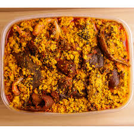

Ela ati ogbono

Description
This soup is one of the most expensives dishes in Nigeria, it is common amongst the south eastern people
of Nigeria. it tastes heavenly, melts right into the buds. there's this popular adage in honour of this great masterpiece
"better Egusi, na money kill am"
Ingriedents
- 1 litre palm oil
- egusi(sized quantity)
- fresh tomato
- water
- meat
- kpomo
- seasoning
- salt
- pepper
- iru
- vegetable(ugwu leaf)
- okporoko(also called maureen's fish)
- crayfish and smoked fish
steps
- grind the tomato, then fry in palm oil till the watter dries up
- pour in the grinded egusi that has been previously mixed with water to form a thick whitish mixture
- leave to boil for while and then pour in the vegetable
- leave mixture to boil for some time, then add your okporoko,kpomo,crayfish,smoked fish. add a reasonable quantity of salt
which is dependent on the individual and the prefered seasoning. then leave to boil
- leave to steam for a while and voila, bon apetit!!